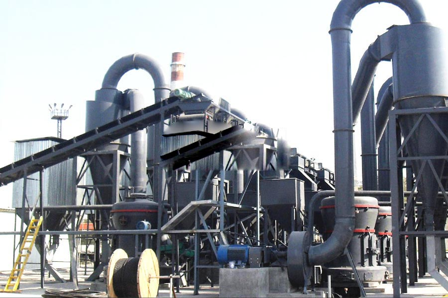

Construction waste crushing production line

Mobile construction waste crushing station for urban construction waste crushing.
talcum powder manufacturing process
talcum powder manufacturing process. Talc processing equipment, talc crusher, talc sand, talc mill, Raymond talc, talc Raymond mill is adapted to small and medium mining, chemicals, building materials, metallurgy, refractory materials, pharmaceuticals, cement and other industries high-fine milling equipment and efficient closed loop, instead of a ball mill is a new type of powder processing mill.
Talc beneficiation and processing equipment which, Talc is a soft smooth non-metallic mineral originally been used to carve art, and later through the milling process, can be used in paper, cables, ceramics, textiles, paints, pharmaceutical and other production sectors.

Talc Powder processing equipment
Usually Talc powder making equipment includes primary crusher and secondary crushing equipment. At last, Our powder grinding mill grind these crushed Talc particles into powder. In this grinding process, hammer mill, ball mill, vertical mill are usually used.
Talc Talc processing equipment in the production process is how it works, in talcum powder production process, the talcum powder pulverizer is a common talcum powder processing equipment, then later on to introduce talc grinding machine is how conduct talc grinding, talc and what production methods.
Talc Powder production line
Zambia talc powder processing equipment price. Limestone powder production line need limestone crusher equipment. In this line, we usually use jaw crusher, cone crusher, mobile crusher such as portable mobile crusher, crawler type mobile crusher. These machines are used to crush limestones into smaller particles. According to the different products, we choose the different crushing process.
Our company is positioned at the apex in the list of the most pre-eminent Talcum Powder processing equipment Exporters in India. The Talc Powder produced by our stone powder production line is widely used in the global market and as it is considered to be an ideal raw material for the manufacturing of PP, LD, HDPE compounding, paints, paper, rubber, medicines, PVC, cosmetic, baby talc etc.
Consumes high quality ultra fine talc in polypropylene, polyamides, cable PVC and other plastic compounds. Talc is being increasingly used in HDPE, PP, LDPE, PVC, ABS & thermosetting compounds. It is excellent filler due to blending characteristics and thermal and electrical resistant. It is chemically inert. It provides the smooth feel to plastic surface. Due to its chemical inertness, superior electrical and thermal resistance and other properties talc imparts stiffness, hardness, tensile strength of plastic products, improves quality of their surfaces, gives them electrical, chemical and thermal resistance.
Talc mill, talc processing equipment, milling equipment talc, talc mill, talc processing equipment, milling machines talc - talc processing equipment is mainly suitable for medium and low hardness, Mohs hardness ≤6 level of non-flammable superfine powder processing explosive brittle materials.
Zambia talc powder processing equipment supplier. Talcum powder processing equipment price is much, CAG mill specializing in the production of talc, talcum powder mill, talc processing equipment, talcum powder production line, Raymond was one of the first production of the manufacturers, a number of national art Mill patent, welcome to visit!
Leave Me A Message, Now
If you have any questions regarding equipment prices, production line configuration or other problems, you can send a message to us, we will contact you soon.